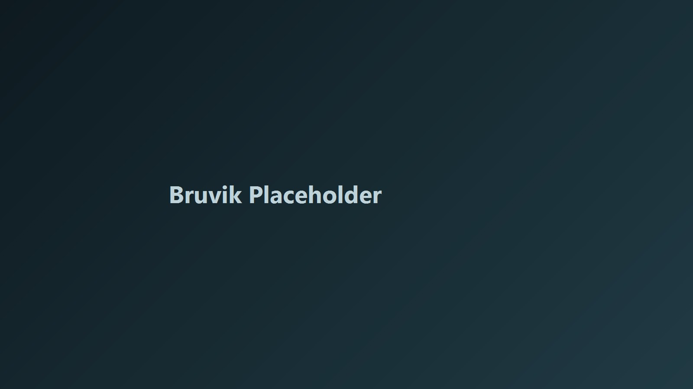

Глава 1
Bruvik kyrkje historie: этимология и средневековый генезис
Понимание идентичности любого поселения начинается с глубокой расшифровки его топонима, который часто служит капсулой времени. Название деревни Брувик восходит к староскандинавскому слову «Brúnvíkr»: «залив у горного хребта». Эта дихотомия камня и воды задала будущую визуальную и культурную ось всей территории.
Первые задокументированные упоминания местного церковного прихода относятся к 1320 году, а фиксация топонима «Brunvik» встречается в 1340, 1360 и 1374 годах. Именно в 1374 году впервые прямо упоминается существование первой деревянной ставкирки (stavkyrkje), символа статуса и устойчивости общины.
Сохранение Брувика как значимого прихода подтверждается налоговыми списками 1563–1598 годов, что подчеркивает непрерывность традиции даже на фоне чумы, реформ и политических изменений региона.
Глава 2
Архитектурная доминанта и парадоксы сакрального пространства
История церкви в Брувике отражает макроисторию Норвегии: от средневекового католического зодчества к постреформационному утилитаризму и архитектурному ренессансу XIX века. Около 1600 года древняя ставкирка уступила место бревенчатому срубу (laftebygg), который просуществовал до 1866 года.
В начале 1720-х государственные долги после Великой Северной войны привели к продаже церковного имущества. В 1724 году церковь Брувика была продана Кристиану Крогу из Бергена и почти полтора столетия оставалась частным активом, что усилило ощущение отчуждения у местной общины.
К 1864 году жители выкупили права на храм, а 13 марта 1867 года была освящена новая Bruvik kyrkje по проекту Фредерика Ганнибала Стокфлета. Храм сохранил важные артефакты прошлого: основание серебряного потира 1690 года и исторические колокола 1850 и 1947 годов.

Таймлайн 1320–2019
1320 / 1374
Первые письменные свидетельства и упоминание первой ставкирки.
1608 / 1622
Возведение бревенчатого сруба и формирование облика аннекс-церкви.
1690
Дар пастора Хаммера: основание серебряного потира.
1724
Великий церковный аукцион и начало 140-летнего периода частного владения.
1867
Освящение новой Bruvik kyrkje по проекту Ф. Г. Стокфлета.
1870
Старт индустриализации и рост муниципальной самостоятельности.
1881 / 1904
Открытие и перестройка колонии на Ульфснесёй.
1961–1968
Закрытие известнякового производства и ликвидация муниципалитета.
1981–2019
Пенитенциарный эко-эксперимент на Ульфснесёй.